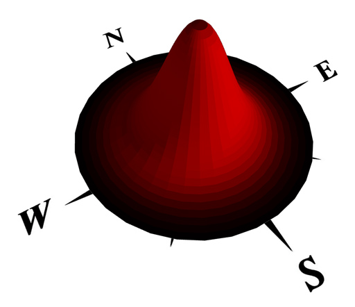
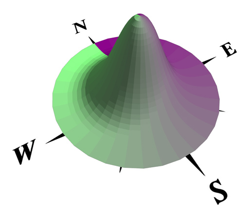

geometry.angle function
angleType selector Selector for the angle calculation.
| maxSlope | Calculates the maximum slope of the shape, relative to the xz-plane, in degrees. |
| azimuth | Calculates the azimuth of the direction of the current shape's maximum slope, in degrees. |
| zenith | Calculates the difference between 90 degrees (zenith) and the maximum slope. |
Returns the angle of the current shape's geometry, depending on the selector, in degrees.
azimuth is the horizontal angle measured clockwise from the north, that is, 90 degrees is east, 180 degrees is south and 270 degrees is west. Azimuth is in the range [0, 360[.
The geometry.angle(zenith) function returns the same value as 90 - geometry.angle(maxSlope).
Examples

Cone-->
comp(f) {
all : color(geometry.angle(maxSlope) / 90, 0.0, 0.0) X.
}

Cone-->
comp(f) {
all : color(0.5, geometry.angle(azimuth) / 360, 0.5) X.
}
geometry.area function
faceOrientation selector Selector for the faces to include in the area calculation.
| all, surface | Default. Selects all faces. |
| back, bottom, front, top, left, right, side | The y-normals of the faces are analyzed by classifying their directions into the corresponding quadrants (in relation to the scope coordinate system of the current shape). |
| object.front, object.back, object.bottom, object.top, object.left, object.right, object.side | The y-normals of the faces are analyzed by classifying their directions into the corresponding quadrants (in relation to the object coordinate system of the current shape). |
| world.north, world.south, world.west, world.east, world.up, world.down, world.side | The y-normals of the faces are analyzed by classifying their directions into the corresponding quadrants (in relation to the world coordinate system). |
| street.front, street.back, street.right, street.left, street.side | If the streetWidth attribute is available on the initial shape, these selectors can be used to identify street-facing faces. See the section below for more details. |
Returns the surface area of the current shape's geometry, depending on the provided faceOrientation selector.
The surface area of the geometry is the sum of the area of all its faces.
geometry.boundaryLength function
Returns the sum of all boundary edge lengths. An edge is considered a boundary edge if it belongs to no more than one face.
Related
geometry.{du|dv} functions
uvSet float Number of texture coordinates set, integer number in [0,9]. The numbering corresponds to the texture layers of the material attribute, see also Texturing: Essential Knowledge.
surfaceParameterization selector The surface parameter space.
| uvSpace | Selects the actual texture coordinates, typically in the range [0,1]. |
| unitSpace | Calculates the geometry-dependent surface stretch along the u- or v-axis and calculates an approximation in world coordinate units, for example meters. |
Returns the range, that is max - min, spanned by the u- or v-coordinate, respectively, of the selected uvSet.
Related
geometry.groups function
Returns an array with group names.
Related
geometry.hasTags function
tagQuery string The query defining which tags to consider. See also Geometry Tagging: Essential Knowledge.
components selector
| all | Default. Checks tags on all components. |
| faces | Only checks face tags. |
| edges | Only checks edge tags. |
| vertices | Only checks vertex tags. |
Returns true if there are any tags, false otherwise. If a tagQuery is provided, only matching tags are considered. If components are specified, only their tags are considered.
Related
geometry.hasUVs function
uvSet float Number of texture coordinates set, integer number in [0,9]. The numbering corresponds to the texture layers of the material attribute, see also Texturing: Essential Knowledge.
Returns true if the geometry has UVs, false otherwise. If a uvSet is provided, only the respective UVs are considered.
geometry.height function
Returns the height of the geometry in world coordinates.
Related
geometry.isClosedSurface function
Returns true if the geometry contains at least one face and all edges belong to exactly 2 faces, false otherwise.
Related
geometry.isConcave function
Returns true if the geometry contains at least one concave face, false otherwise.
Related
geometry.isInstanced function
Returns true if the current shape's geometry is the instance of an asset, that is, the geometry has not been altered since the insert operation, false otherwise.
The geometry.isInstanced function can be used to e.g. check if an inserted asset was trimmed.
Related
geometry.isOriented function
orientation selector Selector for the faces to check for.
| back, bottom, front, top, left, right, side | The y-normals of the faces are analyzed by classifying their directions into the corresponding quadrants (in relation to the scope coordinate system of the current shape). |
| object.front, object.back, object.bottom, object.top, object.left, object.right, object.side | The y-normals of the faces are analyzed by classifying their directions into the corresponding quadrants (in relation to the object coordinate system of the current shape). |
| world.north, world.south, world.west, world.east, world.up, world.down, world.side | The y-normals of the faces are analyzed by classifying their directions into the corresponding quadrants (in relation to the world coordinate system). |
| street.front, street.back, street.right, street.left, street.side | If the streetWidth attribute is available on the initial shape, these selectors can be used to identify street-facing faces. Refer to comp for more details. |
Returns true if at least one of the geometry's faces matches the orientation selector, false otherwise.
The geometry.isOriented function can be used to determine a shape's orientation.
Related
geometry.isPlanar function
tolerance float The tolerance in degrees for deciding if a face is planar or not. The face normal is compared to the edges' crossproduct, "local normal", at every vertex. If the angle between a "local normal" and the face normal is larger than the tolerance the face is non-planar. A reasonable value is 0.25 degrees.
Returns true if the geometry contains at least one face and all faces are planar within tolerance, false otherwise.
Related
geometry.isRectangular function
tolerance float The tolerance in degrees for deciding if an angle is a right one or not.
Returns true if the geometry contains at least one face and all faces consist of 4 vertices and contain only right angles, false otherwise. Angles in the range [90-tolerance, 90+tolerance] are considered to be "right".
Related
geometry.materials function
Returns an array with material names.
The order of materials in the array corresponds to the order given by the indexed component split for materials. In other words, the index of an element in the array corresponds to the component index.
Related
geometry.nEdges function
Returns the number of edges of the current shape's geometry.
Related
geometry.nFaces function
Returns the number of faces of the current shape's geometry.
Related
geometry.nHoles function
Returns the number of holes in the faces of the current shape's geometry.
Related
geometry.nVertices function
Returns the number of vertices of the current shape's geometry.
Related
geometry.{uMin|uMax|vMin|vMax} functions
uvSet float Number of texture coordinates set, integer number in [0,9]. The numbering corresponds to the texture layers of the material attribute, see also Texturing: Essential Knowledge.
Returns the minimal or maximal u or v value of the selected uvSet. Default uvSet is 0.
geometry.volume function
Returns the volume of the current shape's geometry.
The order of groups in the array corresponds to the order given by the indexed component split for groups. In other words, the index of an element in the array corresponds to the component index.